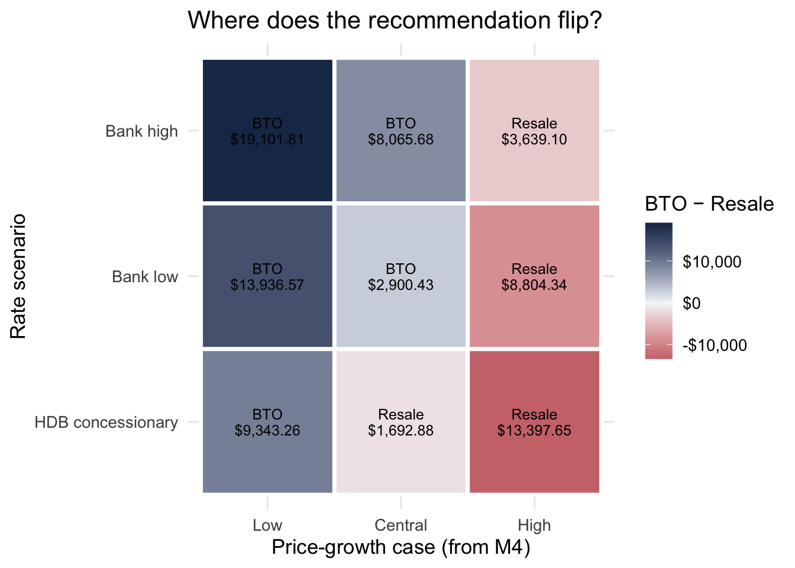

HDB Options for Singles 35+: A Net-Worth Decision Engine
CDAR 2026 · Capstone Project Report
Author
Team—Ivy · Lai Forng · Lee Yen
Published
July 26, 2026
Executive summary
For a self-funded single aged 35 with $100,000 avaliable CPF/cash, the path that maximises projected projected 5-year net worth is 3-Room resale at Punggol, at roughly $192,736 versus $179,914 for the next-best path,which is Punggol BTO, under the central interest-rate scenario (~3.5%) and central town-group price growth.
This report takes 3 HDB price datasets, geo-spatial data based on 2019 Planning map, combine into 2 master tables through Modules 1–4 and ends in a recommendation. The engine underneath is a deterministic net-worth simulator: taking the user’s inputs,preferred towns, flat sizes, monthly housing budget, interest rate and monthly rental. It applies Singapore’s financing rules (TDSR 55%, MSR 30%, LTV 75%, CPF for downpayment, lease decay) to compare BTO, resale and rental. Modules 2–4 supply the inputs the simulator needs: how much monthly a user can afford, a price/psf model to value a specific flat type in a town, and a directional 5-year growth range per town group (M4).
Two questions this answers
Q-A (descriptive): how do BTO, resale and rent compare today on upfront cash, monthly burden under the loan limits, and the town groups?
Q-B (prescriptive): which path maximises projected 5-year net worth under transparent rate scenarios and town-group growth ranges—and how sensitive is that to the assumptions?
What we deliberately do NOT do: we do not forecast 5-year interest rates (not credibly possible); we treat rates as 2–3 scenarios. We do not run a causal Module 5—the question is a calculation, not an intervention (see Section 6).The simulator does not take into account anyone more than age 35 years. The UX of the simulator expects the user to combine the CPF, cash component in the entry field. It does not allow for the selection of “old” flats vs “new” flats in the same town for simplicity. The calculations are meant to be for reference only.
# Light, self-contained: the financing rules as one editable list.# These are ILLUSTRATIVE defaults—TODO: confirm current MAS/HDB figures.rules <-list(income_month =5500, # stakeholder monthly incometdsr =0.55, # total debt servicing ratio ceilingmsr =0.30, # mortgage servicing ratio ceiling (HDB)ltv =0.75, # loan-to-value ceilingloan_years =30, # tenure cap depends on age which we fix at 35horizon_years =5# net-worth evaluation window)# Rate SCENARIOS replace any attempt to forecast rates.rate_scenarios <-tibble(scenario =c("HDB concessionary", "Bank low", "Bank high"),annual_rate =c(0.026, 0.035, 0.045))rate_scenarios
# A tibble: 3 × 2
scenario annual_rate
<chr> <dbl>
1 HDB concessionary 0.026
2 Bank low 0.035
3 Bank high 0.045
M1 · See it
Goal: build ONE clean panel—town × flat_type × month resale prices with different flat types. This is the load-bearing module; everything downstream joins onto this panel.
# flip to eval: true once the data.gov.sg CSVs are downloaded into ./data# TODO: download from data.gov.sg and record URL + date in data/README.mdresale_raw <-read_csv("data/resale_flat_prices.csv")resale <- resale_raw %>%mutate(month =ym(month), # "2020-01" -> Datetown =str_to_title(town),flat_type =str_to_upper(flat_type),# remaining_lease often "61 years 04 months" -> numeric yearsremaining_lease_yrs =parse_remaining_lease(remaining_lease),price_psf = resale_price / floor_area_sqm # keep a per-sqm measure ) %>%filter(flat_type %in%c("2 ROOM", "3 ROOM", "4 ROOM", "5 ROOM")) %>%select(month, town, flat_type, floor_area_sqm, remaining_lease_yrs, resale_price, price_psf) #there was a conversion to psf for all flat typesglimpse(resale)
# Small, self-contained helper used above—safe to render without data.# Parses "61 years 04 months" (or "61 years") into numeric years.parse_remaining_lease <-function(x) { yrs <-str_extract(x, "\\d+(?=\\s*year)") %>%as.numeric() mos <-str_extract(x, "\\d+(?=\\s*month)") %>%as.numeric()coalesce(yrs, 0) +coalesce(mos, 0) /12}parse_remaining_lease(c("61 years 04 months", "80 years"))
[1] 61.33333 80.00000
# flip to eval: true once resale is loaded# The panel the rest of the report joins onto.town_panel <- resale %>%group_by(town, flat_type, month) %>%summarise(med_price =median(resale_price),med_psf =median(price_psf),n =n(),.groups ="drop" )# One opening exhibit: median price/psf over time, 4-ROOM, faceted sample of towns.town_panel %>%filter(flat_type =="4 ROOM", town %in%c("Ang Mo Kio", "Punggol", "Bukit Merah","Clementi","Bukit Batok","Woodlands", "Queenstown", "Sengkang","Tampines","Bedok","Toa Payoh")) %>%ggplot(aes(month, med_psf, colour = town)) +geom_line(linewidth =0.8) +labs(title ="4-ROOM resale price per sqf over time",x =NULL, y ="Median price per sqf (S$)", colour ="Town")
M2 · Group it
Goal: cluster the ~26 towns into interpretable groups, name them, and join the label forward as an M3 feature. (Clustering is Module 2—this is the correction of the swapped M2/M3 label from the proposal.)
# flip to eval: true once town_panel exists# One row per town: price level, recent growth, and (optional) amenity signals.town_features <- town_panel %>%filter(flat_type =="4 ROOM") %>%group_by(town) %>%arrange(month, .by_group =TRUE) %>%summarise(level_psf =median(med_psf),growth_5y =last(med_psf) /first(med_psf) -1, # crude level growthvolatility =sd(med_psf),.groups ="drop" )# TODO (stretch): left_join a few amenity counts/distances per town here# (MRT distance, hawker count, school count) from ONE sf::st_join.glimpse(town_features)
# flip to eval: true—this label is the feature M3 will test.resale_labelled <- resale %>%left_join(town_groups %>%select(town, town_group), by ="town")
M3 · Predict it
Goal (supporting role): a held-out price/psf model, and the graded WITH vs WITHOUT the M2 town-group feature comparison. This values a specific flat inside the simulator—it is not the net-worth engine itself.
# flip to eval: true—two recipes: WITHOUT vs WITH the M2 cluster label.rec_without <-recipe(price_psf ~ flat_type + remaining_lease_yrs + floor_area_sqm,data = train) %>%step_dummy(all_nominal_predictors()) %>%step_zv(all_predictors())rec_with <-recipe(price_psf ~ flat_type + remaining_lease_yrs + floor_area_sqm + town_group, data = train) %>%step_dummy(all_nominal_predictors()) %>%step_zv(all_predictors())rf_spec <-rand_forest(trees =500) %>%set_engine("ranger", importance ="permutation") %>%set_mode("regression")wf_without <-workflow() %>%add_recipe(rec_without) %>%add_model(rf_spec)wf_with <-workflow() %>%add_recipe(rec_with) %>%add_model(rf_spec)
# flip to eval: true—HELD-OUT scoring on test, the number that counts.set.seed(2026)fit_without <-fit(wf_without, data = train)fit_with <-fit(wf_with, data = train)metric_set_reg <-metric_set(rmse, rsq, mae)score <-function(fit_obj, label) {augment(fit_obj, new_data = test) %>%metric_set_reg(truth = price_psf, estimate = .pred) %>%mutate(model = label)}bind_rows(score(fit_without, "without M2 group"),score(fit_with, "with M2 group")) %>%select(model, .metric, .estimate) %>%pivot_wider(names_from = .metric, values_from = .estimate)# TODO: state in prose whether the town_group feature earned its place.
# flip to eval: true—which drivers matter in the WITH model.fit_with %>%extract_fit_parsnip() %>%vip(num_features =10)
M4 · Forecast it
Goal (supporting role): a directional 5-year growth range for each town GROUP (not per flat), with wide intervals. Monthly resale medians give enough points for timetk; annual series would be too small-n to trust, so we would say so and treat the forecast as directional only.
# flip to eval: true once town_panel + town_groups existlibrary(timetk); library(modeltime)group_ts <- town_panel %>%filter(flat_type =="4 ROOM") %>%left_join(town_groups %>%select(town, town_group), by ="town") %>%group_by(town_group, month) %>%summarise(med_psf =median(med_psf), .groups ="drop")# Model ONE group end-to-end; loop or nest over groups for the rest.one_group <- group_ts %>%filter(town_group =="Moderate-Density Transit Hub Moderate Growth")set.seed(2026)splits <-time_series_split(one_group, date_var = month,assess ="12 months", cumulative =TRUE)m_arima <-arima_reg() %>%set_engine("auto_arima") %>%fit(med_psf ~ month, data =training(splits))m_ets <-exp_smoothing() %>%set_engine("ets") %>%fit(med_psf ~ month, data =training(splits))mtbl <-modeltime_table(m_arima, m_ets)mtbl %>%modeltime_calibrate(new_data =testing(splits)) %>%modeltime_accuracy() # report MASE/RMSE; pick the winner# TODO: refit winner on full history, forecast 60 months, keep WIDE intervals,# and feed the growth RANGE (not a point) into the simulator.
Note on rates: we do NOT forecast interest rates. Section 1 uses the three rate_scenarios instead. Two series trending together is not causation.
M5 · Prescribe it
Skipped, deliberately. Module 5 answers “what happens if we intervene?” (A/B, DiD, synthetic control, matching). Our question is a deterministic calculation under fixed rules and scenarios—there is no treatment, no control, no counterfactual policy. Forcing a causal method here would be method without motive. The scenario grid in Section 7.1 is our sensitivity analysis instead.
The net-worth simulator (the engine)
This deterministic function is the anchor deliverable: it applies the financing rules to each path and returns projected 5-year net worth. M2 sets the affordable town group, M3 values the flat, M4 supplies the growth range, scenarios set rates.
# Self-contained, illustrative: a transparent net-worth model, no external data.# TODO: refine CPF logic, stamp duty, and rental assumptions with real figures.monthly_payment <-function(principal, annual_rate, years) { r <- annual_rate /12; n <- years *12if (r ==0) principal / n else principal * r / (1- (1+ r)^(-n))}simulate_networth <-function(path, price, annual_rate, growth, rules, monthly_rent =2200) { h <- rules$horizon_yearsif (path =="rent") {# renter: no equity, pays rent; opportunity cost captured elsewhere (TODO)return(tibble(path = path, net_worth_5y =-monthly_rent *12* h)) } loan <- price * rules$ltv down <- price - loan # from CPF/cash (TODO split) pmt <-monthly_payment(loan, annual_rate, rules$loan_years) paid <- pmt *12* h# crude amortised balance after h years: r <- annual_rate/12; n <- rules$loan_years*12; k <- h*12 bal <- loan * ((1+r)^n - (1+r)^k) / ((1+r)^n -1) value_5y <- price * (1+ growth)^h # M4 growth feeds here equity <- value_5y - baltibble(path = path, net_worth_5y = equity - paid - down)}# Illustrative call under the central scenario—replace price/growth with# M3 valuation and M4 growth once available.bind_rows(simulate_networth("bto", price =380000, annual_rate =0.026,growth =0.03, rules = rules),simulate_networth("resale", price =520000, annual_rate =0.035,growth =0.02, rules = rules),simulate_networth("rent", price =NA, annual_rate =0.035,growth =0, rules = rules))
A 5-year interest-rate forecast is not credible, so we treat the two biggest unknowns—the mortgage rate and town-group price growth—as explicit scenarios and read the recommendation across all of them. This is the substitute for forecasting: rather than one fragile point prediction, we show how the decision changes as the assumptions move, and flag whether the winning path is robust (same winner everywhere) or conditional (the winner flips).
Two scenario axes give a 3 × 3 grid of futures for each path:
Growth—the 5-year price-growth range that M4 hands up, as low / central / high.
# The 5-year price-growth range from M4, expressed as three planning cases.# TODO: replace with the low / central / high edges of your M4 forecast interval.growth_scenarios <-tibble(growth_case =c("Low", "Central", "High"),growth =c(0.005, 0.020, 0.035) # annual price growth per town group)growth_scenarios
# A tibble: 3 × 2
growth_case growth
<chr> <dbl>
1 Low 0.005
2 Central 0.02
3 High 0.035
# Illustrative placeholder prices—TODO: replace with the M3 valuation for the# specific flat, in the affordable town group from M2.path_price <-c(bto =380000, resale =520000)sweep <- tidyr::crossing(path =c("bto", "resale"), rate_scenarios, growth_scenarios) %>%mutate(net_worth_5y =pmap_dbl(list(path, annual_rate, growth),~simulate_networth(..1, price = path_price[[..1]],annual_rate = ..2, growth = ..3,rules = rules)$net_worth_5y ))sweep %>%transmute(path, scenario, rate = scales::percent(annual_rate, 0.1), growth_case, net_worth = scales::dollar(net_worth_5y)) %>%arrange(scenario, growth_case, path)
# A tibble: 18 × 5
path scenario rate growth_case net_worth
<chr> <chr> <chr> <chr> <chr>
1 bto Bank high 4.5% Central -$21,892.55
2 resale Bank high 4.5% Central -$29,958.22
3 bto Bank high 4.5% High $9,877.54
4 resale Bank high 4.5% High $13,516.64
5 bto Bank high 4.5% Low -$51,847.78
6 resale Bank high 4.5% Low -$70,949.59
7 bto Bank low 3.5% Central -$7,872.59
8 resale Bank low 3.5% Central -$10,773.02
9 bto Bank low 3.5% High $23,897.50
10 resale Bank low 3.5% High $32,701.84
11 bto Bank low 3.5% Low -$37,827.82
12 resale Bank low 3.5% Low -$51,764.39
13 bto HDB concessionary 2.6% Central $4,594.96
14 resale HDB concessionary 2.6% Central $6,287.84
15 bto HDB concessionary 2.6% High $36,365.05
16 resale HDB concessionary 2.6% High $49,762.70
17 bto HDB concessionary 2.6% Low -$25,360.27
18 resale HDB concessionary 2.6% Low -$34,703.53
The winner map collapses each rate × growth cell to the better path and the margin—the single view a buyer reads:
# A tibble: 9 × 6
scenario growth_case winner margin bto resale
<chr> <chr> <chr> <chr> <chr> <chr>
1 Bank high Central BTO $8,065.68 -$21,892.55 -$29,958.22
2 Bank high High Resale $3,639.10 $9,877.54 $13,516.64
3 Bank high Low BTO $19,101.81 -$51,847.78 -$70,949.59
4 Bank low Central BTO $2,900.43 -$7,872.59 -$10,773.02
5 Bank low High Resale $8,804.34 $23,897.50 $32,701.84
6 Bank low Low BTO $13,936.57 -$37,827.82 -$51,764.39
7 HDB concessionary Central Resale $1,692.88 $4,594.96 $6,287.84
8 HDB concessionary High Resale $13,397.65 $36,365.05 $49,762.70
9 HDB concessionary Low BTO $9,343.26 -$25,360.27 -$34,703.53
winner_map %>%mutate(scenario =factor(scenario, levels = rate_scenarios$scenario),growth_case =factor(growth_case, levels =c("Low", "Central", "High")) ) %>%ggplot(aes(growth_case, scenario, fill = advantage_bto)) +geom_tile(colour ="white", linewidth =1.2) +geom_text(aes(label =paste0(winner, "\n", margin)), size =3.3, lineheight =0.9) +scale_fill_gradient2(low ="#b53a4a", mid ="#f3f6f9", high ="#1B3556",midpoint =0, labels = scales::dollar, name ="BTO − Resale") +labs(x ="Price-growth case (from M4)", y ="Rate scenario",title ="Where does the recommendation flip?") +theme(legend.position ="right")

BTO’s net-worth advantage over resale across the scenario grid. Navy = BTO ahead, red = resale ahead; the pale band near zero is where the recommendation flips.
Reading it. If every cell names the same path, the recommendation is robust—lead with it plainly. If the winner changes across cells, the decision is conditional: name the exact rate/growth combination where it flips and hand the buyer that trigger (“choose resale only if you expect growth above X and rates below Y”).
The flip point. Holding the rate at the central 3.5% scenario, we sweep growth finely and solve for the break-even where the two paths draw level:
flip <-tibble(growth =seq(0, 0.06, by =0.0025)) %>%mutate(bto =map_dbl(growth, ~simulate_networth("bto", path_price[["bto"]],0.035, .x, rules)$net_worth_5y),resale =map_dbl(growth, ~simulate_networth("resale", path_price[["resale"]],0.035, .x, rules)$net_worth_5y),gap = bto - resale )flip_growth <- flip %>%slice_min(abs(gap), n =1) %>%pull(growth)cat(sprintf("At 3.5%% rates, BTO and resale break even near %.1f%% annual growth; below it BTO wins, above it resale pulls ahead.",100* flip_growth))
At 3.5% rates, BTO and resale break even near 2.5% annual growth; below it BTO wins, above it resale pulls ahead.
One-way sensitivity (tornado). Which single assumption moves the answer most? From a base case (BTO, 3.5% rate, 2% growth) we push each lever to its scenario edges and record the swing in projected net worth—the widest bar is the number to research hardest before committing:
How far each assumption alone moves BTO’s projected 5-year net worth (low edge vs high edge). Dashed line = base case.
NoteWhy this beats a forecast
A single rate forecast would be wrong with false precision. The scenario grid instead tells the buyer what has to be true for each path to win, and the tornado tells them which number to research hardest. That is the decision-useful output—and it is the sensitivity analysis that stands in for Module 5 here.
Recommendation
Lead with the decision.(Fill from the computed sweep, not from intuition.)
The call: for a self-funded single aged 35+ on $5,500/month, choose [path]—projected 5-year net worth $[net-worth], ahead of the next-best path by $[gap] under the central rate scenario. (see Section 7.1)
Q-A answered: BTO needs the least upfront cash but has a wait; resale is available now at higher price/psf; renting builds no equity. (see Section 7)
Q-B answered: the winning path [does / does not] flip across the rate and growth scenarios—the winner map and flip point in Section 7.1 show exactly where. The single assumption to pin down first is [widest tornado bar].
Limits we name: rates are scenarios, not forecasts; M4 growth is directional with wide intervals; the CPF/stamp-duty logic is simplified; the recommendation assumes the stated income is stable over 5 years.